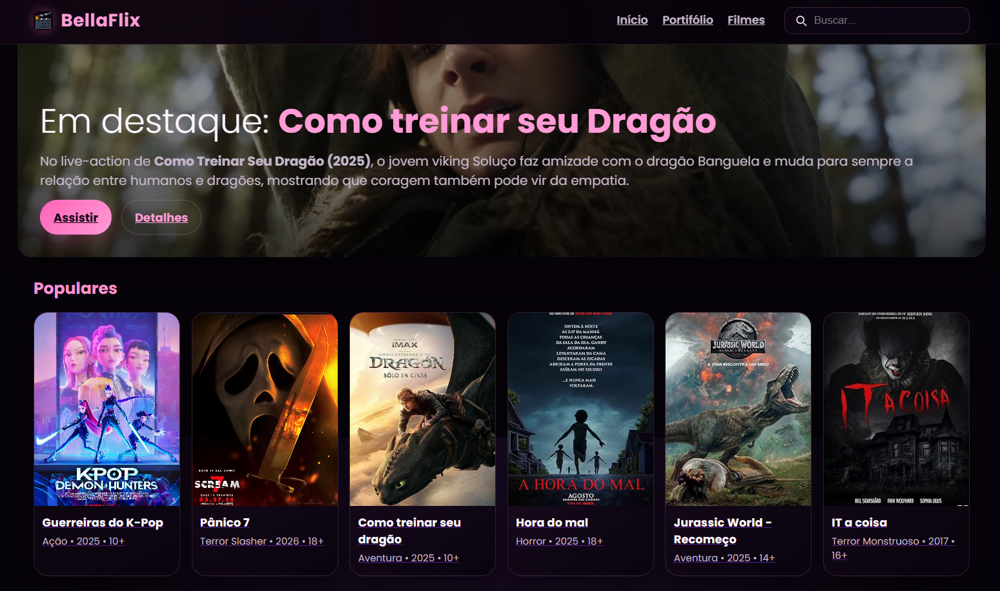

Projetos

Projeto Interdisciplinar - Involucre
Um software desenvolvido para gestão dos descartes de embalagens, aumentando a sustentabilidade nas indústrias.
Ver projeto

BellaFlix + Portfólio
Atividade da disciplina de Desenvolvimento, onde foi designado para fazer um site de filmes junto de um portfólio pessoal.
Ver projeto